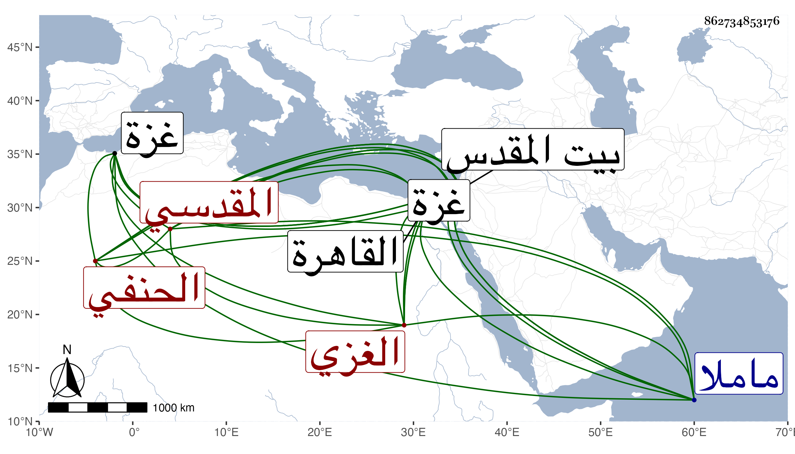

0902Sakhawi.DawLamic.ITO20230111-ara1.EIS1600.862734853176
Biography ID: 862734853176
68
محمد بن محمد بن موسى بن عمران خير الدين أبو الخير بن الشمس الغزي ثم المقدسي الحنفي الآتي أبوه ويعرف كهو بابن عمران . ولد في ليلة العشرين من رمضان سنة ثمان وثلاثين وثمانمائة بغزة ونشأ فحفظ القرآن وكتبا وتلا بالسبع على أبيه وتفقه بالزين قاسم وغيره وسمع على شيخنا في سنة ست وأربعين ثم على الجمال بن جماعة والتقي القلقشندي والزينين عبد الرحمن بن خليل وعبد الرحمن بن داود وغيرهم ، وأجاز له جماعة كأحمد بن حامد وأحمد بن أحمد الأزدي وتميز وولي قضاء الحنفية ببيت المقدس ثم صرف . وقدم القاهرة غير مرة وكذا حج وجاور ثم توجه أيضا في سنة تسع وثمانين وجاور التي تليها ، ورجع فدام ببيت المقدس يدرس ويفتي ويروي حتى مات في يوم الخميس سلخ رمضان سنة أربع وتسعين ودفن من يومه بمقبرة ماملا بالقرب من أبيه وكان له مشهد حافل رحمه الله وإيانا .
